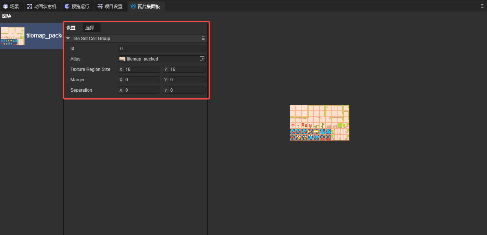
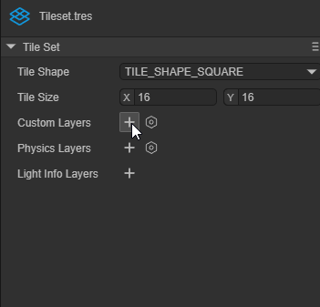
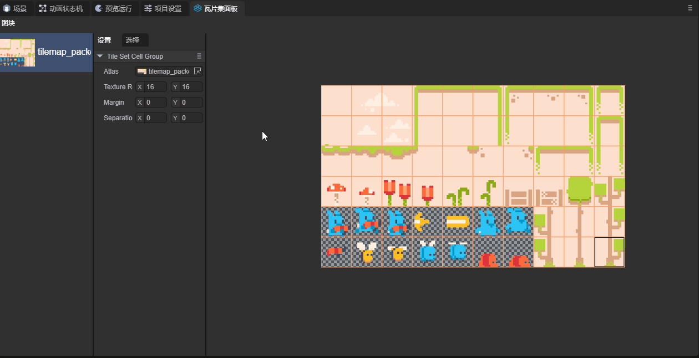
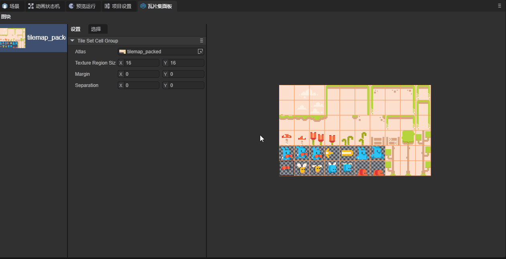
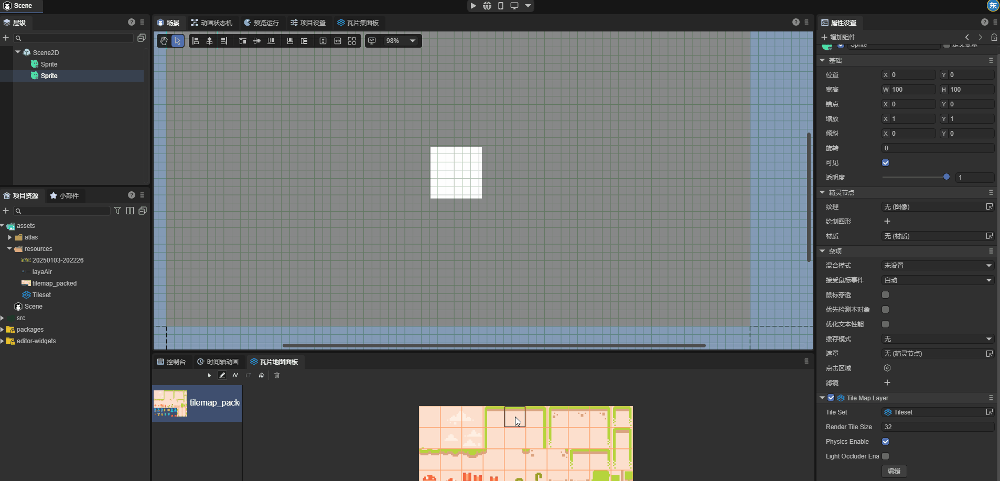
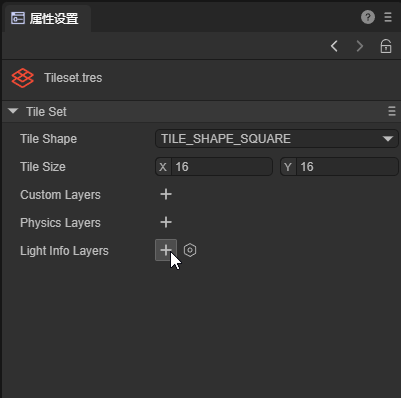
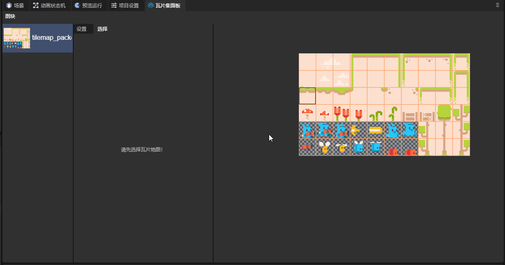
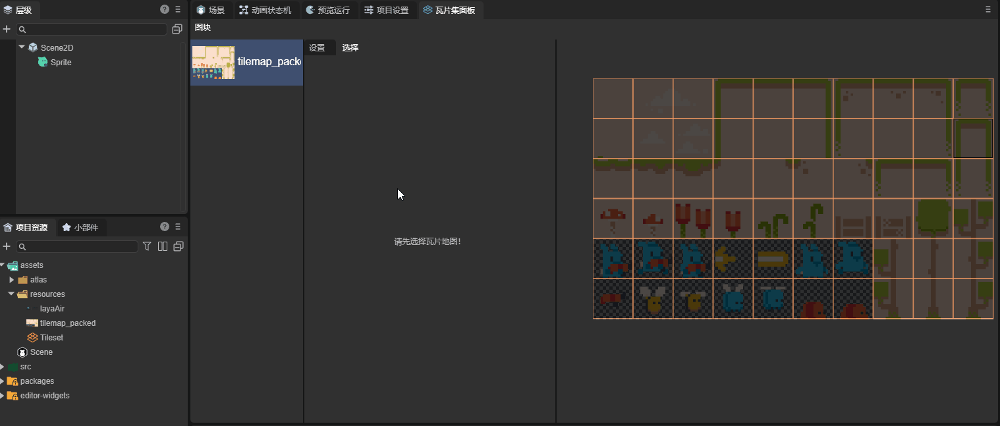
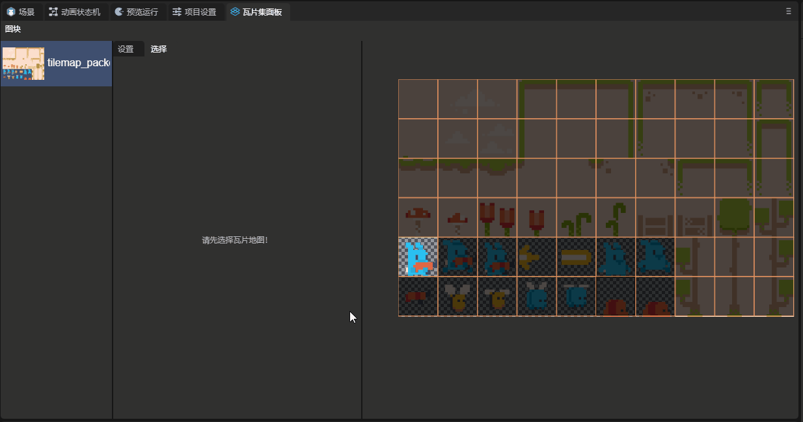
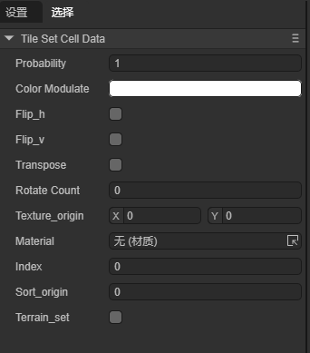

Tileset
一、前言
瓦片地图（Tilemap）是由瓦片（Tile）组成的，可以用于创建游戏的地图布局。使用瓦片地图来创建游戏场景，其效率远高于在场景中一个个的添加2D节点，而且可以创建更大的地图。瓦片地图还可以添加碰撞，遮挡，光照等更强大的功能。
在使用瓦片地图之前，我们首先要创建一个TileSet。TileSet是一种瓦片集的集合，其中可以包括多个瓦片集及其相关数据。
本节内容中，我们使用下图这张瓦片表作为示例：

这张图片来源于Pixel Line Platformer · Kenney
二、使用TileSet
2.1 创建TileSet
在项目资源面板创建一个TileSet：

创建好之后，在面板栏中打开瓦片集面板：

我们可以在瓦片集面板中设置TileSet的各项属性：

TileSet中的各项属性都与瓦片有关，因此下面我们先来学习如何创建一个瓦片集。
2.2 添加瓦片集
首先我们要准备一个图集，这里我们使用第一节中的示例图，将这个tilesheet拖到瓦片集面板中的瓦片区域，如图所示：

添加图集后，面板中就出现了按属性分割好的瓦片集，我们还需要将其创建为瓦片才能正常使用，选中要创建的部分，右键-创建瓦片：

这里我们来了解一下与创建瓦片有关的属性：

ID：一个TileSet中可以创建多个瓦片集，此属性为每一个瓦片集的索引。
Atlas：这个瓦片集使用的图集。
Texture Region Size：纹理区域大小，表示图集上每个瓦片的大小。
Margin：边距，图集边缘上不应选为瓦片的区域，用于去除掉图集边缘上的无用区域。
Separation：间距，图集上每个瓦片之间的距离，用于去除瓦片之间的辅助线等无用区域。
2.3 TileSet的属性
TileSet的属性会作用于每一个瓦片：

Tile Shape：瓦片形状。这个属性决定了场景中瓦片的形状以及系统分割图集的方式。默认瓦片形状是TILE_SHAPE_SQUARE(矩形)，开发者也可以根据瓦片形状选择其它属性：TILE_SHAPE_ISOMETRIC(菱形)，TILE_SHAPE_HALF_OFFSET_SQUARE(半偏移矩形)和TILE_SHAPE_HEXAGON(六边形)。
下图中，我们将此属性设置为了TILE_SHAPE_HEXAGON(六边形)，可以看到此属性的效果：


Tile Size：场景中每个瓦片的大小，一般来说这个值要和Texture Region Size保持一致。
Custom Layers：自定义层，开发者可以通过添加自定义层为瓦片添加自定义属性。
首先，在TileSet的属性设置面板中创建一个Custom Layers，并设置名称与属性类型：

接着在瓦片集面板中选择一个瓦片，并点击选择，在面板的底部，可以看到我们设置的属性，每个瓦片的属性是相互独立的，开发者可自行设置属性值：

Physics Layers：物理层。使瓦片可以产生物理效果，其属性值如下所示：

Friction：摩擦系数。Restitution：恢复系数。Density：密度。Group：碰撞组。Category：碰撞类别。Mask：碰撞掩码。
添加物理层后，开发者可以为瓦片添加碰撞形状：在瓦片集面板中选择一个瓦片，点击选择，在面板最下方可为瓦片添加碰撞形状：

如果希望物理效果生效，还需要开启Tile Map Layer组件中的Physics Enable属性
此时，我们在场景中设置瓦片，就可以看到物理效果：

Light Info Layers：光线遮挡层。使瓦片地图可以与2D光线组件互动。
在TileSet的属性设置面板中创建一个Light Info Layers，并为其设置一个名称：

在瓦片集面板中选择一个瓦片，点击选择，在面板最下方可为瓦片添加形状：

如果希望此属性生效，需要在Tile Map Layer中启用Light Occluder Enable属性。
接下来，在场景中添加这个瓦片，与光照有关的部分可以参考文档2D灯光与网格，效果如图：

可以看到光照产生的阴影。
2.4 瓦片属性
本节内容我们来了解一下瓦片的属性。在瓦片集面板中选中一个瓦片，在选则界面中可以看到这个瓦片的属性：

Size By Atlas：设置一个瓦片将由图集中的几块组成。
这里我们选中一个瓦片，将这个瓦片的Size By Atlas属性设置为（2，3），

可以看到，图集中一块2*3的区域组成了一个瓦片，将这个瓦片放置到场景中：

下面我们讲解一下瓦片地图中Animation的用法：
使用Animation，首先，我们创建一个瓦片集，但不要创建瓦片，如图所示：

接下来，我们选择一个瓦片并创建，动画信息会保存在这个瓦片上，这里我们选择了第五行第一列的图片：

选中这个瓦片，为其添加帧，这里我们添加了五帧，瓦片地图会自动从这个瓦片开始，向右选取五个瓦片作为动画帧，帧属性的参数就是这一帧持续的时间：

将这个瓦片添加到场景中，可以观察到效果：

接下来我们来介绍一下Animation中的其它属性：
Columns：动画从每一行中选取的帧数，当值为零时，动画会从同一行中选取帧。否则会自动转行。
Seperation：从选取的瓦片开始，向X，Y方向上选取帧时跳过的帧数。
Mode：决定动画的播放模式。
DEFAULT：从第一帧开始；
Random_Start_Times：从随机帧开始。
下面来介绍一下Tile Data中的属性
Color Modulate：控制瓦片的颜色。
Texture_origin：纹理中心位置。当瓦片添加到场景中时，瓦片的中心会一直处于瓦片块的中心，但其纹理的位置可以改变。


可以看到，纹理的位置出现了偏移。
Material：瓦片的材质。
Index：瓦片的索引。
2.5 创建备选瓦片
对于一个已经创建好的瓦片块，开发者可以将这个瓦片块创建一个备选瓦片：

备选瓦片有三个独有的属性：

Flip_h：垂直翻转。
Flip_v：水平翻转。
Transpose：逆时针旋转90度。